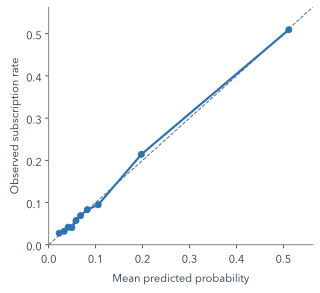

10 One Set of Results
Quarto, reproducible publishing, coding agents, Markdown, Python, EPUB, data analysis, k-means clustering
The fast path ended with one report. A real evaluation has more readers than that. The product team wants the headline and the table; a risk or compliance reviewer wants to know who the model treats differently and what it must not be used for; an investor wants one number that moved. The way to serve all of them without the numbers drifting apart is the design the repository already has: one script computes every result once, and every document reads them. This chapter adds the second document, a model card, and grows the report, and it shows how to hand an agent a larger task safely: by asking for a plan, then judging the result by its checks.
It is the first chapter of this part, whose chapters each take one kind of output, a model card here and then slides, a site and a white paper, and teach it the same way: what it can do and what that is called, how to ask for it, and how to check it (Section 2.7).
- Explain why results are computed once and read by every document, and what each kind of check (tests, guards, the render) catches.
- Ask an agent for a model card as one larger task, with a plan first, and judge it by its checks.
- Number sections and refer to them, to tables and to figures, so that every reference resolves in HTML, Word and PDF.
- Predict what a changed setting does to every document, then rebuild and check.
10.1 Compute once, check three ways
scripts/evaluate.py is the only code in the repository that fits a model. It writes five plain files to outputs/, and they are the same bytes on every run, because every random choice, the split, the models and the bootstrap, has a fixed seed. For this book’s run:
| File | Holds |
|---|---|
summary.json |
the best release (v3), the test-set size (11,303), the base rate (11.7%), the seeds, the data’s checksum and the package versions |
metrics.csv |
each release’s metrics, with a 95% bootstrap interval |
segments.csv |
the same by age band and by job |
calibration.csv |
predicted against observed rates, in ten bins |
curves.csv |
the points of the ROC and precision-recall curves |
Three kinds of check then guard different things, and a professional repository needs all three:
| Check | Runs | Catches |
|---|---|---|
Tests (uv run pytest) |
on the code and the data | a changed data file (its checksum), a leak (no release may use duration, which is known only after the call), a wrong metric, outputs missing a column |
Guards (claim(…) in a document) |
when a document renders | a sentence whose words the results no longer support: “best”, “most”, “within five points” |
| The render | on every document, in every format | a reference that does not resolve, a missing file, a cell that fails |
A test does not read prose, and a guard does not test code; neither notices a stale typed label, which only a reader, or a prediction tested by a rebuild (Section 10.4), will.
10.2 A model card, as one larger task
A model card is a short document that travels with a model: what it is, what it is for and not for, how it performs overall and for the groups it affects, and what its makers know is wrong with it. Mitchell and colleagues proposed the form in 2019, with a fixed list of sections, which is the vocabulary to ask for.
The card is a good example of a task to hand over whole (Section 2.8): you can state the result (those sections, from those files), and its checks run without you (guards, the references, the render). So ask for a plan first, read it, and only then let the agent work. Start a branch for it, as for any change you will review:
git switch -c model-cardPlan first, and wait for my go-ahead: add model-card.qmd (html, docx and typst) for the best release, with the sections of Mitchell et al. (2019), "Model Cards for Model Reporting": model details, intended use, factors, metrics, evaluation data, training data, quantitative analyses, ethical considerations, and caveats and recommendations. Read only outputs/ and data/README.md. Slice metrics by age band and by job come from outputs/segments.csv, and calibration from outputs/calibration.csv. Cite the paper and the dataset from a new references.bib, opening each DOI first. Guard every sentence whose wording depends on the results with `claim`. Render all three formats, then list anything you could not verify.replies with a plan · after your go-ahead: writes references.bib and model-card.qmd · uv run quarto render model-card.qmd
Read the plan as a reviewer would. A good one lists the sections in order, says where each number comes from, names the slices and the figure, and says how it will check the references; in the test run it also promised to compute the “top 10%” label from outputs/ rather than type it. If the plan misses something, say so before it starts; it is cheaper to change a plan than a file. Then reply Go ahead.
When it finishes, the checks are the ones the prompt asked for:
- The guards. Read every
claim(…)in the file: each should state a sentence of the card, and its condition should compute that sentence fromoutputs/. A guard whose condition can never be false, such as a name read from the results compared with itself, protects nothing. - The references.
references.bibshould hold Mitchell et al. and the dataset, each with a DOI you can open. In the test run, the dataset’s DOI record had its authors garbled, and the agent cited the dataset as the repository’s own page gives it: a reason to open DOIs, not only to collect them. - The list of what it could not verify. This is the most useful part of a larger task’s report. The test run’s list named how the split was made, how the calibration bins were formed, and that the intended-use and ethics text was its own framing. Each item is a question for you, not a defect to accept.
- The render. Open the three formats, and look at the slices as their subjects would.
The finished card’s slices make the point of the exercise. Under v3, the called top 10% of the list holds 47.9% of the contacts aged 60+ but 5.0% of those aged 40-49: the model ranks by age, because in these data the 60+ band subscribes most often (38.8%). That is accurate, and it is exactly what a card must say, because age is a protected characteristic in UK law, and a bank deciding whom to call needs to know it before it relies on the ranking.
| Age band | Test contacts | Called | Subscription rate | Recall |
|---|---|---|---|---|
| 18-29 | 1,337 | 20.0% | 17.1% | 51.8% |
| 30-39 | 4,512 | 8.2% | 10.7% | 37.9% |
| 40-49 | 2,953 | 5.0% | 8.6% | 32.0% |
| 50-59 | 2,102 | 7.4% | 9.7% | 41.9% |
| 60+ | 399 | 47.9% | 38.8% | 70.3% |
Three traps met in the test run. Pandas’ styled tables (df.style) need the jinja2 package, which the repository does not have, so the first render stopped; the agent wrote the table another way rather than add a dependency, which is the choice to prefer. Without a setting, the PDF’s citations came out in a different style from the HTML and Word, with an empty “References” heading and a second “Bibliography” page, because Quarto hands citations in a Typst PDF to Typst’s own processor; citeproc: true under typst: makes all three formats use the same one (Section 10.3). And a failed render leaves the previous model-card.html where it was, so read the render’s last lines before you open the file.
10.3 Sections, numbers and references
The report grows two sections, and a reader of a three-format document needs to find them. Numbered sections and cross-references do that, and each is one setting or one label:
| You ask for | Quarto’s feature | It renders as |
|---|---|---|
| numbered sections | number-sections: true |
“2 Who is called” |
| a section referred to | ## Who is called {#sec-segments} and @sec-segments |
“Section 2”, a link |
| a table or a figure referred to | a cell labelled tbl-… or fig-…, and @tbl-… |
“Table 2”, “Figure 2” |
| the same citation style in every format | bibliography:, and citeproc: true for typst |
“(Mitchell et al. 2019)” in all three |
In report.qmd, number the sections and add two: who is called (recall in the top 10% by age band, from outputs/segments.csv, as a table labelled `tbl-segments`) and calibration (a figure labelled `fig-calibration` from outputs/calibration.csv), each with a guard where its wording depends on the results, and refer to both from the opening paragraph with @sec- references. Render all three formats and check that no cross-reference shows "??".edits report.qmd · uv run quarto render report.qmd
The check is in the prompt: an unresolved reference renders as “??”, in every format, so search each output for it. In the test run, the opening paragraph read the same in HTML, Word and PDF, ending “Section 2 shows who is called, by age band, and Section 3 whether the predicted probabilities match the rates observed.”
Calibration asks whether a predicted probability can be read as a rate: of the contacts the model gives 20%, do about one in five subscribe? Figure 10.1 draws it for the best release, from the same file the report reads.

For v3, no bin is more than 1.7 percentage points from the diagonal; for the oldest release, the largest gap is 5.7. The report says which release is best calibrated with a guard, because that word, unlike the numbers, does not follow the data by itself.
When both documents render, review the branch as in Section 3.7: the scope (model-card.qmd, references.bib, report.qmd, perhaps AGENTS.md), one number against outputs/, and a fresh clone. Then commit.
Stuck for two minutes? Paste this into your agent. It backs up your work and brings the project to this point; then carry on from here.
Catch me up: follow ../quarto-workshop/checkpoints/15-eval-results/README.md10.4 Change a setting, explain the rebuild
The call centre has room for more calls. No prompt is supplied: this is the test of the design, and you can do it by hand.
What should change, what should not, and what is the trap?
The number of calls (to 2,261), and with it every top-of-list metric: recall, precision, lift and each band’s share called. ROC AUC, average precision, the Brier score, the calibration and the best release do not change: they measure the whole ranking, not where it is cut. The trap is everything that names the share in words. In the test run, a report written without guards on them kept “top 10%” in a table caption and two row labels beside the new figures, and the metric names in outputs/, recall_top10 among them, kept saying 10 too. In the finished project the labels compute the share, and each caption that names it, which cannot compute, has a guard: both documents stop with “The caption says top 10%, which a caption cannot compute.” Two unit tests in tests/test_metrics.py fail as well, because they pin the 10% rule; that is a test doing its job, and changing the share means updating them on purpose. In the test run, the agent’s own card also stopped on a guard about which jobs the calls reach least, the kind of sentence a doubled list really does change.
Summary
- One script computes every result once into plain files; every document reads them, so a reviewer can trust that the report and the card quote the same run.
- Tests check the code and the data, guards check the prose, and the render checks the references; none of them sees a typed label, which a prediction and a rebuild do.
- A model card has a fixed set of sections, which is the vocabulary to ask for; its slices are where a model’s effect on people shows.
- Hand an agent a larger task with a plan first, then judge the result by its guards, its references, its list of what it could not verify, and the render.
- Numbered sections and labelled tables and figures give references that resolve in every format;
citeproc: truemakes a Typst PDF cite like the others.
The project now has two documents for readers who read. The next readers will be in a meeting, in front of a screen.
Further reading
- Margaret Mitchell and colleagues, Model Cards for Model Reporting, Proceedings of the Conference on Fairness, Accountability, and Transparency (FAT* ’19), 220–229 (checked 2026-11-18).
- Quarto, Cross References and Citations (checked 2026-11-18).
- UK Government, Equality Act 2010, section 4: the protected characteristics, age among them (checked 2026-11-18).
- S. Moro, P. Cortez and P. Rita, A data-driven approach to predict the success of bank telemarketing, Decision Support Systems 62 (2014), 22–31: the study behind the data (checked 2026-11-18).